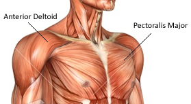

4 Best Chest Exercise for Building Muscle

Chest day owns a lot of centre focus from bodybuilders and gym-goers alike – and with good reason.
Targeting the chest muscles
The chest or pecs can be labelled as one single muscle, namely the " pectoralis major" which can be then split into three sections:

1) "Clavicular part (upper chest)"
2) "Sternal part (centre chest))"
3) " Costal part (lower chest)"
Underneath pectoralis major lays smaller pectoralis minor – this cannot be specifically targeted.
The upper region of the chest muscle fibres originate in the anterior portion of the clavicle, and insert into the humerus – (the upper arm bone:) referred to as the ‘clavicular fibres.’
The lower, (largest region of the chest muscle fibres) originate in the sternum, inserting into the humerus: referred to as the ‘sternocostal fibres.’
Exercise #1- Push up
How to do it:
Start on all fours and place your hands directly underneath your shoulders, keeping your arms straight. “Think about tightening your glutes while initiating the movement by bending your elbows,” King says. To recruit as many muscle fibers as possible, keep your hips in line with your shoulders, and lower as close to the floor as possible. Don’t let your hips drop to the floor, or stick your butt in the air. Keep your wrists strong, pressing powerfully into the floor. “If you flare your elbows out slightly, you’ll target your chest,” he adds, “while tucking your elbows to the body will target your triceps.”Exercise #2- Barbell Bench Press
How to do it:
Lie flat on your back on a bench. Grip the bar with hands just wider than shoulder-width apart, so when you’re at the bottom of your move your hands are directly above your elbows. This allows for maximum force generation. Bring the bar slowly down to your chest as you breathe in. Push up as you breathe out, gripping the bar hard and watching a spot on the ceiling rather than the bar, so you can ensure it travels the same path every time.Exercise #3- Dumbbell Bench Press
How to do it:
Lie back on a flat bench with a dumbbell in each hand. Hold the weights at shoulder-level, then press the weights straight up.Exercise #4- Smith Machine Incline Press